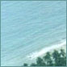
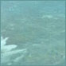

| |
While Bird Island Villas promises
the peaceful seclusion of island life, luxury services and facilities
further ensure the time you spend on the island is everything you dream of. Residents have
unlimited use of all island facilities, each carefully integrated with the natural landscape
of the island.
nightingale pavilion
This discreet,
open-air pavilion is nestled in a grove, surrounded by gentle swaying palms and aromatic blossoms. It forms the
centre of the island's activity and acts as an elegant (yet casual) dining room, bar and lounge.
Delicious meals freshly prepared by the resident chef are served at your request and occasional entertainment brought
in from the neighbouring islands can be enjoyed beneath the shaded canopy. A narrow path leads from the pavilion down
to the beach, where a starlit stroll after a satiating meal is highly recommended.
tennis court
There is one all-weather, clay tennis court next to the
Nightingale Pavilion.
swimming pools
There are two freshwater swimming pools on the island.
One is located next to the Nightingale Pavilion and the other toward the northern end of the island, with its own
poolside bar serving exotic tropical drinks. Both pools are surrounded by a sundeck and are situated amidst
the palm grove which offers natural areas of sun and shade. The pools can be easily reached by all villas via
the circulation path.
circulation path
A narrow, sandy path criss-crosses the island, joining all
villas to the Nightingale Pavilion, the two swimming pools, and to each of the four beaches. The path forms a
natural aviary amidst the island's growth and various rest stops and palm-tied hammocks along the way invite quiet
reflection.
 beaches
There are four separate beaches on Bird Island and one sandy cove.
The east side of the island forms a natural harbour and small lagoon called Perico Beach. At the northern end of
the lagoon, where the beach widens again, lies Vireo Beach, perhaps the most tranquil spot of the island. The beach
extends well beyond the palm grove at
the northern tip of the island and a sandbar, known as Pelican Cove, becomes visible at low tide. Straight up
from Pelican Cove on the west side of the island is the continuous Solitaire
Beach; it stretches the entire length of the island, narrowing and widening at points along the way.
The northern
end of Solitaire Beach is the perfect spot for watching the sun set over the Atlantic. Ibis Point is Bird Island's
southern-most tip and is surrounded by a wide and beautiful beach which basks in the sun from dawn to dusk.
Palm-frond thatched cabanas are scattered along all beaches providing shade and shelter.
island staff
Bird Island has a total maintenance staff of four.
They includes the resident chef (who will both cook to your needs and shop on the neighbouring island),
two housekeepers, and the groundskeeper, who is also a bird specialist and a highly-skilled fisherman.
 watersport
A selection of boats is always available on Bird Island,
allowing you to sail around the neighbouring cays, to head to deeper waters for a day of fishing, or to do
your grocery shopping on the nearby Highborne Cay. Available boats include a 23' Donzi with twin outboards for
fishing and snorkelling; a smaller 16' single-motor outboard Wellcraft; 2 small sailboats; 2 pedallos;
and a windsurfer. Snorkelling equipment is made available from the watersport shed, as are a number of
sling-back deck and beach chairs and umbrellas.
mooring dock
A mooring dock is located at the southern end of
Solitaire Beach allowing for easy access onto the island from this natural harbour. Island boats are kept in
the boathouse where there is ample space for the mooring of villa owners' private boats.
by arrangement
A number of activities can be arranged for your enjoyment
including deepsea fishing; scuba diving (with instruction); sail cruises; parasailing; entertainment, including
calypso music and dancing; and island excursions.

|
|